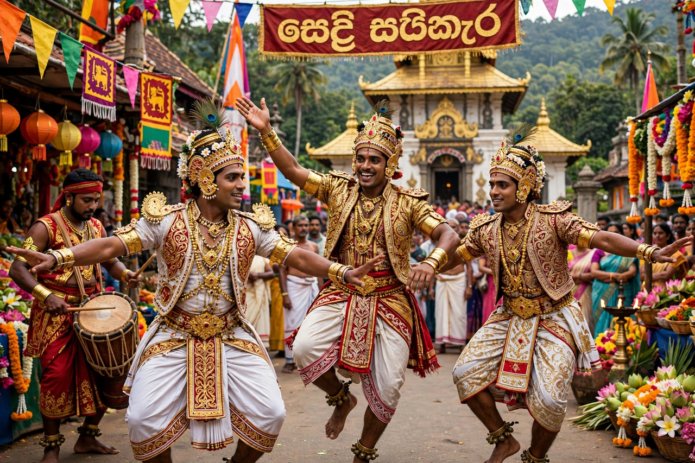

| Sinhalese people | |
|---|---|
 Kandyan dancers in traditional dress | |
| Total population | ~17 million (Sri Lanka) plus diaspora |
| Regions | Sri Lanka (majority, ~75% of population); diaspora in UK, Australia, Canada, Middle East |
| Language | Sinhala (Indo-Aryan) |
| Religion | Predominantly Theravada Buddhism; minority Christianity |
The Sinhalese people are an Indo-Aryan ethnic group native to the island of Sri Lanka, where they form the majority of the population — about 75 percent, or some 17 million people. They speak Sinhala, an Indo-Aryan language, and are predominantly Theravada Buddhists, a heritage central to Sinhalese identity for more than two thousand years.
According to the island's chronicles, the Mahavamsa and Dipavamsa, the Sinhalese descend from Prince Vijaya and his 700 followers, exiled from the north Indian kingdom of Sinhapura, who landed in Sri Lanka on the day of the Buddha's death, traditionally dated to 543 BCE. Modern historians treat the Vijaya legend as mythic charter rather than record, while genetic and linguistic evidence points to sustained migration and mixing between migrants from northern India (and later southern India) and the island's indigenous inhabitants.
Sinhalese civilisation coalesced around the hydraulic kingdoms of Anuradhapura (from the 4th century BCE) and Polonnaruwa, whose kings built vast irrigation reservoirs and Buddhist monuments. Buddhism, introduced by the monk Mahinda in the 3rd century BCE, fused with kingship: the Sinhalese king ruled as protector of the faith and custodian of the Buddha's Tooth Relic. After Portuguese, Dutch and British colonisation (1505–1948), the last Sinhalese kingdom, Kandy, fell to the British in 1815.
Sinhala is written in its own rounded script and has two principal registers, literary and spoken, with strong historical influence from Pali — the language of the Theravada canon — and Sanskrit, and loanwords from Tamil, Portuguese, Dutch and English. About 70 percent of Sinhalese are Buddhist; a significant Christian minority, both Catholic (concentrated on the western coast) and Protestant, dates from the colonial era. Buddhist festivals such as Vesak structure the communal calendar, and temple networks of monasteries anchor village life.
Traditional Sinhalese society is organised partly by caste, though in a form generally less rigid than in India, with the Govigama cultivator caste largest. Cultural exports include Kandyan dance, masks and drumming, the martial art angampora, batik textiles, and a cuisine built on rice and curry, hoppers, string hoppers and coconut sambol. The Sinhala and Tamil New Year in April is shared with Sri Lankan Tamils.
Relations with the Tamil minority have defined modern Sri Lanka: Sinhala-Buddhist nationalism after independence, the Sinhala Only Act of 1956, and disputes over language, land and power culminated in the Sri Lankan Civil War (1983–2009) against Tamil Tiger separatists. Since the war's end, questions of reconciliation and minority rights under a Sinhalese-majority state remain central to the island's politics.